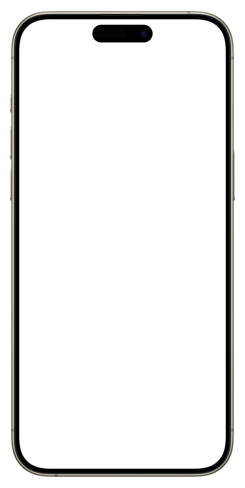

July Petry
24 y.o.
Communication Design student at HAW Hamburg
“What keeps you guys awake at night?”

Our generation is constantly overstimulated by quick dopamine hits. We doomscroll, escape boredom, and rarely give our brains a break. As a result, our focus, attention, and creativity suffer because we’ve forgotten how to simply do nothing. So, I’ve prepared a presentation about myself, one that matches our attention span.